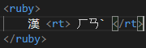

This element defines an explanation of characters in a ruby annotation.
Use rt together with ruby and rp. The ruby element consists of one or more characters that needs explaining, rt gives the information, and the rp element defines what to show for browsers that do not support ruby annotations.
This element is used typically for japanese annotations.
This is how its coded:
The global attributes are supported.
The event attributes are supported.